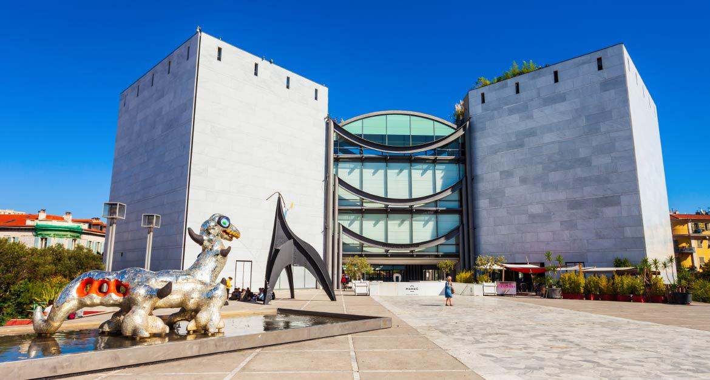

Die Kultur in Nizza
Le Carnaval ist eines der wichtigsten Feste in Nizza. Er findet im Februar statt und wird von den Einheimischen sorgfältig vorbereitet, die Straßen werden mit Blumenarrangements geschmückt und die Festwagen werden dem Motto entsprechend verziert. Wer nach guter Laune und viel Spaß sucht, sollte sich einen Besuch in Februar nicht entgehen lassen.

Mit über 300 Sonnentage pro Jahr ist die mit Abstand beliebteste Aktivität der Touristen in Nizza „Baden am Strand“. Kein Wunder, denn Nizza gilt als eines der schönsten Badeparadiese an der Côte d’Azur, doch keine Sorge, solche Strandtage müssen nicht langweilig sein… Wer in Nizza Strandurlaub machen möchte, der kann sich an einem großen Angebot an Wassersportarten erfreuen. Von Tauchen über Jetskifahren bis hin zu (Wind-) surfen, hier findet jeder was, der auch im Urlauf Action braucht. Nizza verfügt über ein reiches architektonisches Erbe, wodurch es dort auch viel zu sehen gibt. Zahlreiche Villen, Paläste und Barockkirchen aus der Zeit der Savoyer, und das ist gerade mal ein Bruchstück der vielen Sehenswürdigkeiten Nizzas. Zudem finden sich in der südfranzösischen Hafenstadt auch deutliche Spuren der „Belle Époque“ aus der Zeit vor 1914. Besonders sehenswert sind Bauwerke wie die russisch-orthodoxe Kirche Saint-Nicolas mit ihrer imposanten Architektur und ihren üppigen Schätzen. Die Kirche Sainte-Jeanne d’Arc mit ihrem 65 Meter hohen mit Flammen verzierten Glockenturm aus den 70er Jahren des 20. Jahrhunderts und… …die gotische Basilika Notre-Dame de Nice mit ihren kunstvoll gearbeiteten Bildhauereien. Auch kunstinteressierten Touristen hat Nizza viel zu bieten, denn es gibt zahlreiche Kunstmuseen, wie zum Beispiel das Musée des Beaux-Arts. In diesem Museum erwartet Sie eine beeindruckende Sammlung aus dem späten 16. Jahrhundert bis hinein in die Mitte des 20. Jahrhundert. Auch Bewunderer der modernen Kunst sind in Nizza richtig. Neben den Museen, die sich auf die Kunst der vergangenen Epochen konzentrieren, gibt es auch Museen, wie zum Beispiel das Musée d‘Art Moderne et d‘Art Contemporain kurz MAMAC, die sich der modernen Kunst, sowie neuen Realisten wie César widmen.
